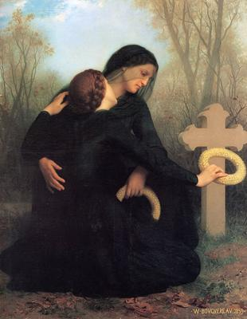

Cada 2 de noviembre millones de creyentes en el mundo —particularmente en los países de tradición católica— visitan cementerios, limpian tumbas, encienden velas, dejan flores y rezan a favor de las almas de sus difuntos. Expresan así sus sentimientos hacia seres queridos que ya no existen, que no están allí, y que no pueden saber lo que otros hacen en su memoria. Igual podrían solamente dedicar a la memoria de su difunto algunos pensamientos y emociones desde su casa; pero sus motivos no son racionales, sino emocionales… quizás hasta instintivos. Además de religiosos.


En el fondo, no hacen todo eso por el difunto, sino por ellos mismos. En el plano psicológico, estos rituales responden a una necesidad muy humana: procesar el dolor de una pérdida todavía no resuelta. La muerte de un ser querido activa emociones intensas —tristeza, miedo, ira, culpa— y todo ritual funerario actúa como una especie de canalizador simbólico.
Cuando una persona deposita flores, enciende una vela o reza (incluso si no cree en nada sobrenatural), en el fondo está elaborando su duelo. Es una forma de aceptar poco a poco la ausencia de su ser querido, y de afirmar, frente al vacío, que el vínculo afectivo existe todavía en algún sentido emocional o simbólico.
Nuestros antepasados neandertales y Homo sapiens tempranos ya enterraban a sus muertos, a veces con flores, armas o alimentos. Y algo similar ocurre en otras especies sociales, particularmente las que muestran conductas empáticas avanzadas. Se han observado elefantes, chimpancés, delfines y cuervos, realizando comportamientos que recuerdan vagamente rituales funerarios: tocan el cuerpo sin vida, lo vigilan, permanecen junto a él, o se alejan en silencio. Todo indica una conciencia emocional de la pérdida, aunque no necesariamente una creencia metafísica.
Sin embargo en el ser humano hay a la vez un miedo inconsciente: miedo a la desaparición, miedo a que no haya nada después de la muerte, miedo a aceptar que la existencia humana no tiene «continuación» en ninguna otra dimensión. Es el viejo consuelo emocional del homo sapiens que, desde las cavernas, se ha negado a aceptar la evidencia más incómoda de todas: que la muerte es el fin de la conciencia, que es el fin definitivo de nuestra existencia.
Desde el punto de vista antropológico y psicológico, los rituales hacia los muertos constituyen una de las expresiones más antiguas y reveladoras de la mente simbólica del ser humano. De hecho, el tratamiento ritual de los cadáveres es uno de los indicadores fundamentales de la aparición de la conciencia de la muerte, es decir, del momento en que nuestra especie (y algunas pocas más) comprendió que la vida tiene un final irreversible.
Sin embargo, el pensamiento mágico, la superstición y la religión, no podían dejar de estar presentes en este tipo de ocasiones en que el ser humano necesita una respuesta y un consuelo. Y a medida que el pensamiento simbólico humano se volvió más complejo, ese estado emocional hacia la muerte derivó en creencias sobrenaturales. El cerebro, incapaz de aceptar la aniquilación total de un ser querido, inventó el «alma» como consuelo. Y nacen así los primeros cultos a los ancestros, que luego evolucionaron hacia religiones completas.
El llamado «Día de los Fieles Difuntos» nació oficialmente en el siglo XI, cuando la Iglesia Católica —siempre hábil para aprovechar supersticiones ajenas— institucionalizó una fecha dedicada a orar por las almas que supuestamente se encontraban en un lugar intermedio entre el Cielo y el Infierno: el Purgatorio, ese ingenioso invento teológico que sirvió durante siglos como cajero automático espiritual de Roma. Allí las almas de los «pecadores leves» eran sometidas a un fuego purificador, hasta que alguna misa o indulgencia las liberara del suplicio. Un negocio redondo que alcanzó su clímax con la venta de indulgencias, detonante de la Reforma Protestante iniciada por Martín Lutero en 1517.
En la actualidad la Iglesia sigue invitando a sus fieles a «ayudar» a los muertos mediante oraciones y misas. Una idea que, aunque grotesca desde un punto de vista racional, cumple una función emocional comprensible: mantener viva la ilusión de que nadie muere del todo. Es la misma creencia que, bajo otros nombres y rituales, ha existido en prácticamente todas las culturas del planeta.
Desde una perspectiva antropológica, el culto a los muertos es tan antiguo como la humanidad misma. En la América precolombina, por ejemplo, los pueblos mexicas, mayas, purépechas y andinos, ya rendían tributo a sus ancestros. Creían que las almas de los difuntos regresaban periódicamente al mundo de los vivos, y que era necesario agasajarlas con comida, bebida y ofrendas. Cuando los conquistadores europeos llegaron, encontraron que aquellas prácticas encajaban perfectamente con su propio calendario litúrgico. Así, el sincretismo hizo su magia: el «Día de Muertos» indígena se disfrazó de catolicismo, y se le añadió el Purgatorio como ingrediente doctrinal. Y donde antes había pan de maíz y cacao, ahora habría cruces, rosarios y rezos.
Pero esta mezcla no fue exclusiva de América. En otras partes del mundo, las culturas también dedicaron fechas especiales a los difuntos. Los antiguos celtas celebraban el Samhain, el fin del verano, cuando —decían— las almas regresaban para visitar sus hogares. Y en Asia oriental, el Festival de los Fantasmas Hambrientos honra a los espíritus errantes que buscan alimento y atención. En Madagascar, el Famadihana o «vuelta de los huesos», consiste en desenterrar a los ancestros, envolverlos en nuevos sudarios y bailar con ellos. Pero todas estas tradiciones comparten la misma raíz psicológica: la incapacidad humana para aceptar la nada.
Porque, en realidad, todo este entramado de almas, espíritus y «otros mundos», no se sostiene más que en la necesidad afectiva de prolongar la existencia propia y la de los seres amados. El cerebro humano, con su poderosa imaginación y su terror innato a la muerte, inventó el alma para no enfrentarse al vacío. Sin embargo, ningún hallazgo arqueológico, neurológico ni físico, ha dado jamás la menor evidencia de que algo —más allá de la materia— sobreviva al colapso biológico del cuerpo.
De modo que este 2 de noviembre, cuando los cementerios se llenen de flores, oraciones y lágrimas, bien podríamos verlo como lo que realmente es: una expresión de nostalgia y negación, no de «espiritualidad»… y menos de religiosidad. No hay nada de malo en recordar a los que amamos, pero sería más honesto hacerlo desde la comprensión científica de la existencia, no desde el mito. Los muertos no nos oyen, no vagan, no «esperan» ser liberados por rezos. Lo único que permanece de ellos —y esto sí es real— es su huella genética, cultural o emocional en quienes seguimos vivos.
Más sensato que rezar por los muertos es amar a los vivos. Es mejor disfrutar ahora de tus seres queridos, mientras respiran, ríen y piensan. Abrazar hoy a quien quieres, conversar, compartir, vivir juntos. Porque un día no sólo ellos dejarán de estar, sino que también tú desaparecerás, sin alma, sin espíritu, sin «trascendencia» más allá del polvo de las estrellas que te compone.
Y cuando eso ocurra, incluso el recuerdo de ti se irá desvaneciendo. Piensa en tus bisabuelos: probablemente no los conociste, ni sabes cómo se llamaban, ni dónde están enterrados. Y mucho menos de tus tatarabuelos. Es como si nunca hubieran existido. Lo mismo pasará contigo, conmigo, con todos. Y lejos de ser una tragedia, eso es precisamente lo que hace valiosa la vida: que es finita, irrepetible y consciente sólo por un instante. Aprovecharlo no requiere fe, sino lucidez.
[Godless Freeman]
[Imagen: The Day of the Dead (1859), de William-Adolphe Bouguereau (1825-1905)]
https://es.wikipedia.org/wiki/D%C3%ADa_de_los_Fieles_Difuntos
Comentarios
Comments powered by Disqus